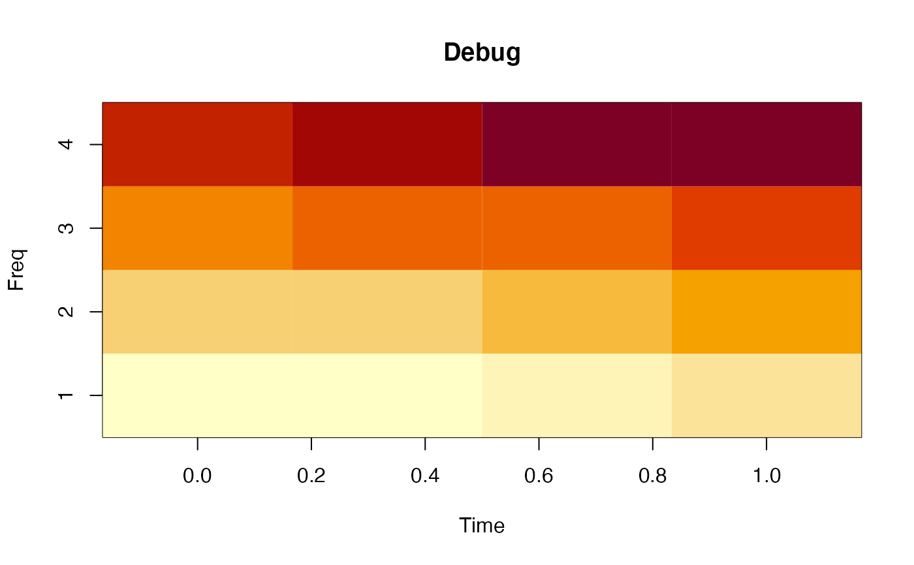
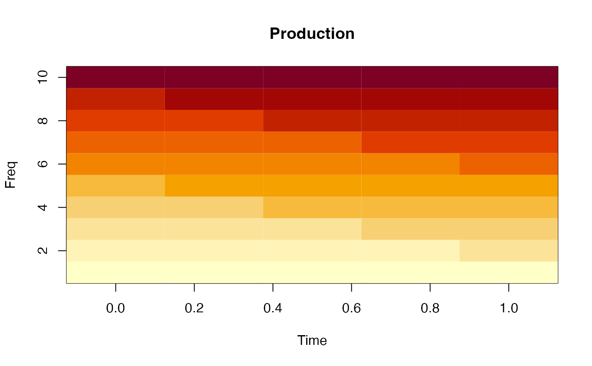

Convert functions to pipe-friendly functions
as_pipe(
x,
...,
call,
arg_name,
.name = arg_name,
.env = parent.frame(),
.quoted = FALSE
)R object as input
default arguments explicitly display in the returned function
a function call, or the function itself
argument name to be varied. This argument will be the first argument in the new function so it's pipe-friendly.
new argument name; default is the same as arg_name
executing environment
whether call has been quoted
If x is missing, returns a function that takes one argument,
otherwise run the function with given x
# modify a function call
vary_title <- as_pipe(call = plot(1:10, 1:10),
pch = 16,
arg_name = 'main',
.name = 'title')
vary_title
#> <Pipe-compatible function>
#> function (title, ..., pch = 16)
#> {
#> plot(1:10, 1:10, ..., pch = pch, main = "[input:title]")
#> }
#> <environment: 0x7faca5c41328>
# vary_title is pipe-friendly with `pch` default 16
vary_title(title = 'My Title')
# `pch` is explicit
vary_title(title = 'My Title', pch = 1)
# other variables are implicit
vary_title(title = 'My Title', type = 'l')
# modify a function
f <- function(b = 1, x){ b + x }
f_pipable <- as_pipe(call = f, arg_name = 'x')
f_pipable
#> <Pipe-compatible function>
#> function (x, ...)
#> {
#> f(..., x = "[input:x]")
#> }
#> <environment: 0x7faca6052470>
f_pipable(2)
#> [1] 3
# Advanced use
# Set option dipsaus.debug.as_pipe=TRUE to debug
options("dipsaus.debug.as_pipe" = TRUE)
# Both `.(z)` and `z` work
image2 <- as_pipe(call = image(
x = seq(0, 1, length.out = nrow(z)),
y = 1:ncol(z),
z = matrix(1:16, 4),
xlab = "Time", ylab = "Freq",
main = "Debug"
), arg_name = 'z')
#> options("dipsaus.debug.as_pipe") is set to TRUE. This should be used only in debug mode. Do not use for production!

# main can be overwritten
image2(matrix(1:50, 5), main = "Production")

# reset debug option
options("dipsaus.debug.as_pipe" = FALSE)